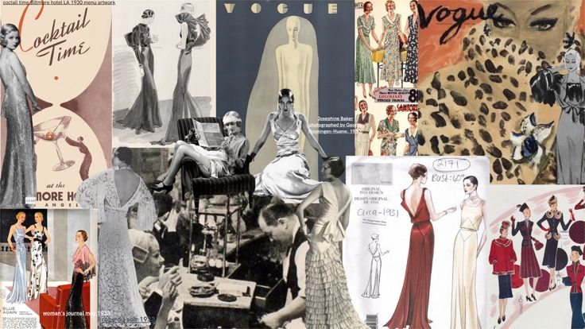
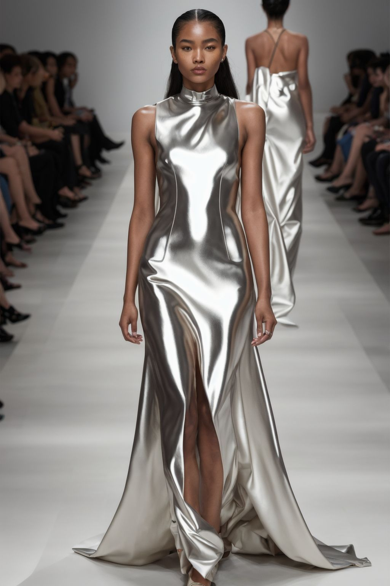
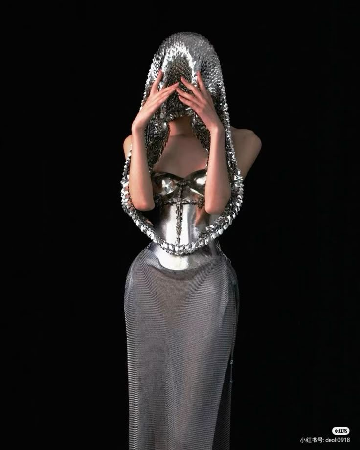
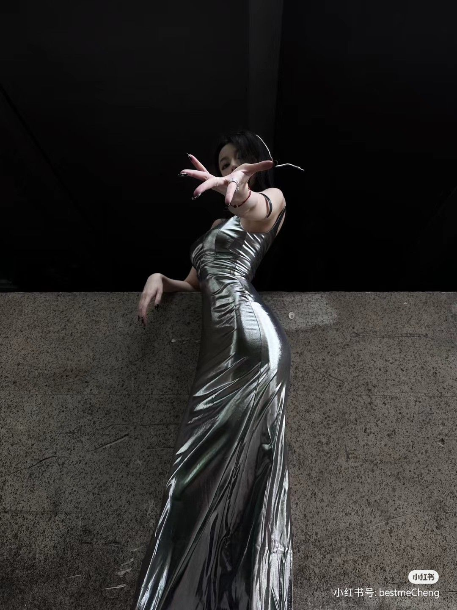
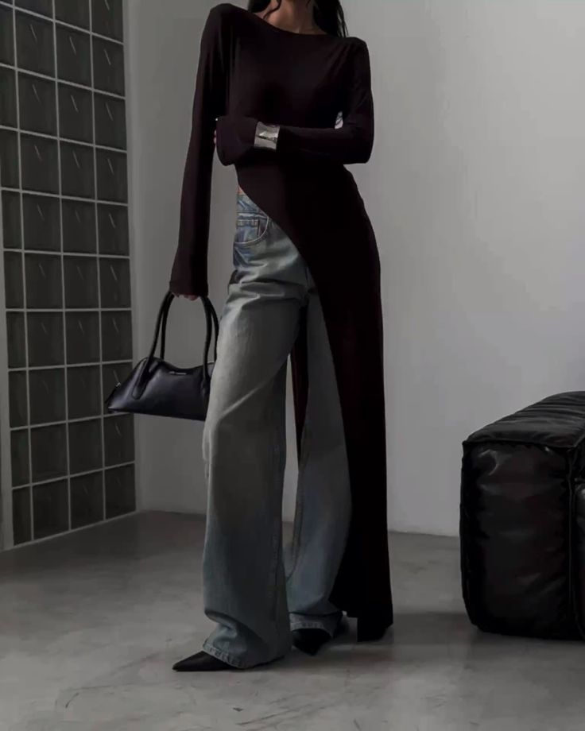
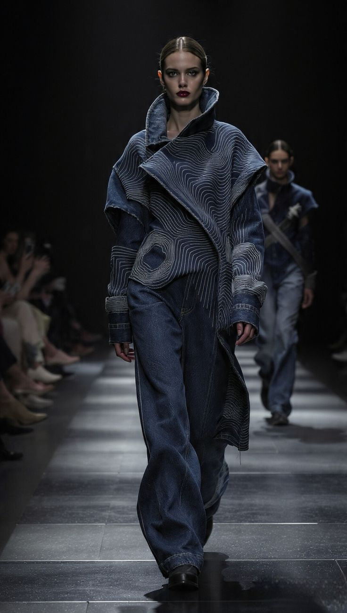
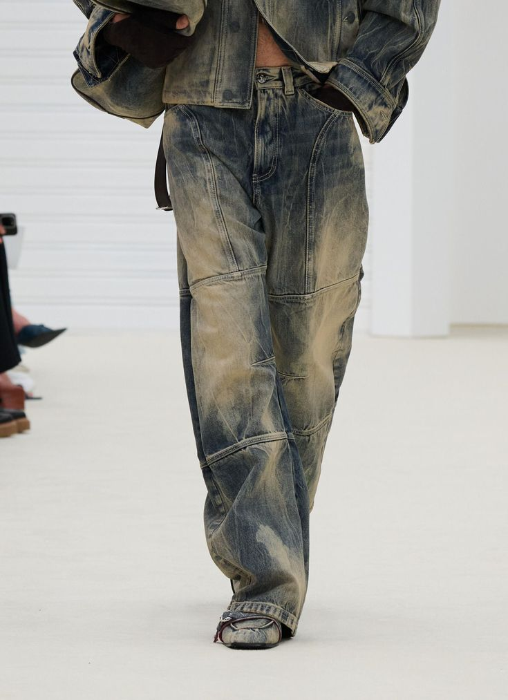
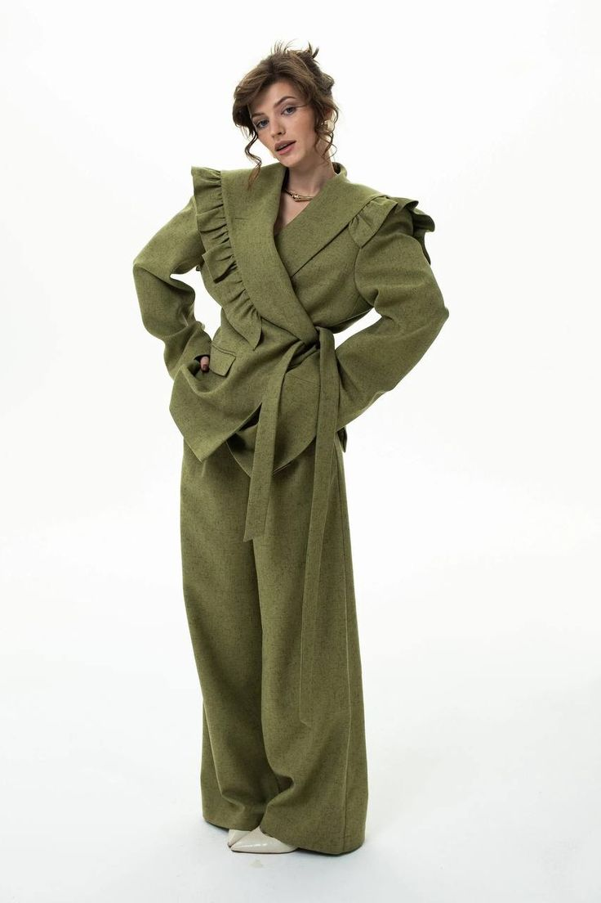

Будущее уже здесь: 5 модных трендов 2026 года, которые перевернут ваш гардероб
Тренды / Аналитика

Мир моды никогда не стоял на месте, но то, что происходит сейчас, напоминает тектонический сдвиг. Милан, Париж и Нью-Йорк диктуют новые правила. Цифровая эстетика смешивается с тактильной роскошью, а уличный стиль окончательно вытесняет офисный дресс-код.
Вот 5 главных трендов, о которых говорят байеры и редакторы.
1. «Жидкий металл» (Liquid Metal)
Забудьте про скучную черную кожу. Этой осенью в фаворе — фактуры, похожие на ртуть или расплавленное серебро. Дизайнеры вроде Paco Rabanne и Balmain предлагают нам полностью металлические платья и юбки-миди.
Как носить: Тотал-лук (полностью металлик) подойдет только смелым. В реальной жизни сочетайте серебристую юбку с объемным серым свитером и грубыми ботинками. Глянец должен быть матовым по фактуре.



2. Умная туника (Tech-Tunic)
Пандемия научила нас ценить комфорт, а ИИ научил нас ценить форму. В тренд возвращается платье-туника, но не бабушкин фасон, а гиперобъемный крой из высокотехнологичного джерси. Это та вещь, которая выглядит так, будто ее напечатали на 3D-принтере.
Лайфхак: Ищите модели с асимметрией и запахами. Носите с высокими сапогами (over-the-knee) — это визуально вытягивает силуэт.

3. Гипер-шнуровка (Hyper-Lacing)
Корсеты уходят, оставляя нам лишь намек на них. Этот сезон — про агрессивную шнуровку, которая становится конструктивным элементом. Не только на спине, но и по бокам брюк, на рукавах пиджаков и даже на воротниках рубашек.
Пример: Ferragamo показал брюки, полностью зашнурованные по внешнему шву. Это превращает скучные офисные штаны в сексуальный дизайнерский объект.
4. «Состаренный деним» (Reverse Grunge)
Борьба за экологию привела к неожиданному последствию: мода на искусственно состаренные вещи стала еще более высокотехнологичной. Речь не о банальных потертостях, а о «заплаточном» дениме, где используется апсайклинг.
Важно: Это не лохмотья 90-х. Это сложные наслоения тканей (джинса + твид + хлопок). Бренды Diesel и Y/Project делают ставку на гранж будущего.


5. Костюм-облако (Cloud Suiting)
Все устали от жестких плеч. Новый тренд на деловые костюмы — это отсутствие структуры. Пиджаки напоминают уютные халаты или стеганые одеяла. Мягкий объем, спущенная линия плеча, стежка (как на пуховиках).
Совет: Выбирайте пастельные тона: лавандовый, мятный, пыльно-розовый. В таком костюме можно пойти и на переговоры (с кроссовками), и на свидание (с босоножками на платформе).
Что по итогу?
Рынок сегодня требует универсальности. Тренды 2026 года объединяет идея «гибрида»: тапочки превращаются в лоферы, пальто — в одеяло, а спортзал — в офис. Инвестируйте не в количество, а в текстуру.

А какой тренд примеряете на себя вы? Пишите в комментариях!